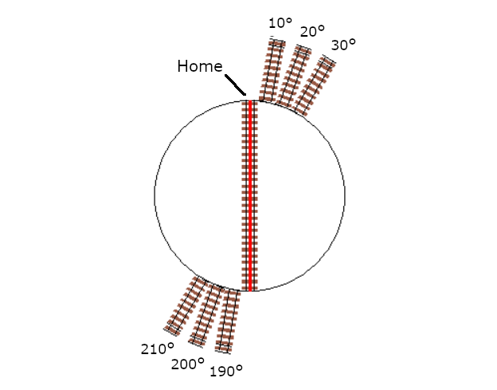

{kind=link}
Testing, Tuning, and Control


Ex-Turntable commands
Before proceeding with testing or any configuration, it’s important to understand the two commands available for controlling EX‑Turntable.
This is a debug or diagnostic command that can be executed via the serial terminal of the CommandStation:
<D TT vpin steps activity>
This is the EX-RAIL command to be included in myAutomation.h:
MOVETT(vpin, steps, activity)
For both of these commands, “vpin” is as defined in your “myAutomation.h” file, and “steps” is the number of steps from the home position, not the number of steps the turntable has to travel.
For the diagnostic command, “activity” needs to be defined as a number, whereas for the EX-RAIL command, this is defined as text based on the table below. Sound confusing? The reason for using text in the EX-RAIL command is to make your automation sequences more “human-friendly” when reading what they do later. It’s much easier for us humans to remember words rather than numbers.
Diagnostic activity |
EX-RAIL activity |
Description |
|---|---|---|
0 |
Turn |
Turn to the desired step position |
1 |
Turn_PInvert |
Turn to the desired step position and invert the phase/polarity (required for manual phase switching only) |
2 |
Home |
Activate the homing process, ignores the provided step position |
3 |
Calibrate |
Activate the automatic calibration process, ignores the provided step position |
4 |
LED_On |
Turns the LED on, ignores the provided step position |
5 |
LED_Slow |
Sets the LED to a slow blink, ignores the provided step position |
6 |
LED_Fast |
Sets the LED to a fast blink, ignores the provided step position |
7 |
LED_Off |
Turns the LED off, ignores the provided step position |
8 |
Acc_On |
Turns the accessory output on, ignores the provided step position |
9 |
Acc_Off |
Turns the accessory output off, ignores the provided step position |
Here’s a quick example to demonstrate the difference between the diagnostic and EX-RAIL commands, with both commands below rotating to step position 100:
<D TT 600 100 0>
MOVETT(600, 100, Turn)
Development version commands
This feature is not available in the current 'Production' version
For users keeping up with the EX‑CommandStation development releases, version 5.1.16 introduced a new turntable/traverser object, allowing for similar definition and control to that of turnouts/points.
The existing methods of control for EX‑Turntable using the native <D TT ...> command and MOVETT() EX‑RAIL command remain as-is, however there are now more complete methods of definition and control available.
When tuning positions, using <D TT ...> as outlined on this page is still the simplest method for understanding accurate step counts to align with positions.
For defining the new turntable/traverser objects with DCC-EX native commands, refer to Turntables/Traversers (Configuring the EX-CommandStation), and for controlling them, refer to Turntables/Traversers.
For the new commands available to define and control these objects with EX‑RAIL, refer to Turntable/Traverser Objects - Definition and Control.
Note that as per the existing commands, the above table for the various activities is still relevant, with the native <I ...> command requiring numeric activities as per the first column, and EX‑RAIL ROTATE() command requiring the named activities as per the second column.
For further information on using this new functionality, some examples are included at the bottom of this page in the section NEW - Development version control of EX-Turntable.
Interactive Serial console commands
As of version 0.5.0-Beta, the ability to test EX‑Turntable directly via the serial console has been introduced.
Similar to the EX‑CommandStation diagnostic command outlined previously and up until version 0.7.0, the syntax is <steps activity>, where again steps is the number of steps from the home position to move to, and activity is as per the previous table. Note that also like the diagnostic command, this needs to be a number. In version 0.7.0, this changes to <M steps activity>.
For example, sending the command <300 0>/<M 300 0> via the serial console will result in output similar to this:
Received serial input: 300 0
Test move 300 steps, activity ID 0
Received notification to move to step postion 300
Position steps: 300, Auto phase switch - moving 300 steps
Setting phase switch flag to: 0
In version 0.7.0, a number of other interactive serial console commands have also been added. This is the complete list:
<C>- Initiate the calibration sequence<D>- Enable/disable debug output to the serial console<E>- Erase the EEPROM contents, which will force calibration to occur at next startup<H>- Initiate homing<M steps activity>- Initiate a move to the provided step count with the specified activity<R>- Initiate a reboot (note with the old bootloader Nano this will not function correctly)<T>- Enter/exit sensor testing mode, and requires a restart if exiting<V>- Display the startup information in the serial console
Testing EX-Turntable
Firstly, power on EX‑Turntable, followed by your CommandStation. By powering these on in that order, you will ensure that EX‑Turntable is available prior to the CommandStation trying to load the device driver, otherwise it will consider the device as “OFFLINE”, and commands will fail.
Referring again to Adding a New Device, skip ahead to Checking the Driver, and the output you’re looking for to validate the EX‑Turntable device driver is loaded and connected successfully is below:
<D HAL SHOW><* Arduino Vpins:2-69 *>
<* PCA9685 I2C:x40 Configured on Vpins:100-115 *>
<* PCA9685 I2C:x41 Configured on Vpins:116-131 OFFLINE *>
<* MCP23017 I2C:x20 Configured on Vpins:164-179 OFFLINE *>
<* MCP23017 I2C:x21 Configured on Vpins:180-195 OFFLINE *>
<* EX-Turntable I2C:x60 Configured on Vpins:600-600 *> <<== This is the important line, |EX-TT| is connected!
If there is an “OFFLINE” at the end of the EX‑Turntable line, it indicates something is not quite right. Refer to EX-Turntable showing as offline with <D HAL SHOW>.
At power on, note that the turntable should have moved itself to the home position, so all commands below assume this is the case.
Note
For all testing and tuning below, it is assumed that the default option for automatic phase switching is enabled, and that the default ULN2003/28BYJ-48 stepper driver and motor combination is in use in half step mode, which is ~4096 steps per revolution.
For automatic phase switching, this should translate to ~512 steps for the 45 degree phase switch trigger point, and ~2560 steps for the 225 degree revert trigger point.
This command should rotate the turntable 100 steps only:
<D TT 600 100 0>
This command should rotate the turntable a further 500 steps and active the phase inversion relays:
500 is the difference between the existing 100 steps and target 600 steps
600 steps is greater than the ~512 step/45 degree trigger position for phase inversion
<D TT 600 600 0>
This next command should rotate the turntable in the reverse direction by 300 steps and deactivate the phase inversion relays:
300 is the difference between the existing 600 steps and target 300 steps, with the reverse direction being the shortest path there
300 steps is less than the ~512 step/45 degree trigger position for phase inversion
<D TT 600 300 0>
This command should rotate the turntable again in the reverse direction, and should also activate the phase inversion relays:
2000 steps is greater than the ~512 step/45 degree trigger position for phase inversion
It is also less than the ~2560 step/225 degree trigger position to revert the inversion
<D TT 600 2000 1>
Finally, this command will cause the turntable to once again find its home position:
<D TT 600 0 2>
Providing these tests have completed successfully, you are now ready to tune the turntable positions for your layout in preparation for defining the EX-RAIL configuration and putting EX‑Turntable to good use.
Tuning your turntable positions
Tip
To determine your starting positions, you will need the full turn step count as recorded in First start and automatic calibration.
To tune your turntable positions, you will need to calculate the number of steps from the home position the turntable needs to rotate in order to reach the desired position. By default, the turntable will turn in a clockwise direction (as demonstrated by the homing activity).
Determine the positions
At this point, you should either have a layout you’re fitting EX‑Turntable into, or a layout design that you’re working to, with the various turntable connection tracks defined.
The simplest way to devise the approximate number of steps for each turntable position is to calculate these based on the degrees each step will turn.
For the default EX‑Turntable configuration with the ULN2003/28BYJ-48 stepper driver/motor combo in half step mode, this should give a step count close to 4096 for a single 360 degree rotation, which means each step is ~0.088 degrees of movement (360/4096 = 0.088).
Therefore, to determine the number of steps required to turn a certain number of degrees, use the formula “steps = degrees/degrees per step”. To turn 10 degrees requires ~114 steps (10 / 0.088 = 113.64).
In this example, for simplicity, we will devise the steps required for a six position turntable, with position 1 being 10 degrees from the home position, position 2 a further 10 degrees, position 3 a further 10 degrees again, and positions 4 through 6 being 180 degrees from the first three positions.
{kind=link}
Therefore, using our formula, the starting point for each position will be:
Position |
Degrees from home |
Steps from home |
|---|---|---|
1 |
10 |
114 |
2 |
20 |
227 |
3 |
30 |
341 |
4 |
190 |
2159 |
5 |
200 |
2273 |
6 |
210 |
2386 |
Example tuning commands
To validate the above calculated positions, the following six diagnostic commands should be executed in the serial terminal of the CommandStation, which will allow you to visually inspect the alignment with your layout tracks and adjust accordingly:
<D TT 600 114 0>
<D TT 600 227 0>
<D TT 600 341 0>
<D TT 600 2159 0>
<D TT 600 2273 0>
<D TT 600 2386 0>
If you find any of these positions are slightly out of alignment, simply adjust the step count as appropriate to compensate.
Note that due to the automatic phase inversion, the last three positions will automatically active the phase inversion relays due to being within the 45 to 225 degree angles that activates phase inversion.
Apply to your layout
At this point, you should be able to apply the above calculations to your own layout and come up with the step count required for each position.
Use appropriate diagnostic commands to test and tune each position for that perfect alignment, and providing your layout is functional, you should be able to drive a locomotive on and off your turntable in each position.
Advertising positions to Engine Driver and WiThrottle applications
Now that you have defined all of your turntable positions with appropriate phase/polarity switching, it’s time to get these advertised to Engine Driver and wiThrottle applications.
The method to advertise these is to use EX-RAIL’s ROUTE function with the MOVETT command, which will ensure all of your defined turntable positions appear in the Engine Driver and wiThrottle Routes sections.
If this is your first experience with EX-RAIL and the “myAutomation.h” file, familiarise yourself with EX-RAIL by reading through EX-RAIL (Automation/Animation).
Pay particular attention to the various mentions of ROUTE and the associated examples.
There are two highly recommended additions to using just these ROUTEs:
Utilise EX-RAIL’s virtual RESERVE() and FREE() functions to ensure that while you are operating your turntable, nothing else can interfere with it. This is not so important during manual operation, however if you want to add any other automation (say, turning a warning light on), you will need these to ensure the relevant automation activities are not interrupted should you choose another turntable position prior to the first move completing.
Utilise aliases to make things human friendly, and we have also provided 30 pre-defined aliases for the ROUTE IDs to ensure there will be no conflicts, as all IDs must be unique.
To define the required turntable positions in the example six position turntable from above, you will need to have this content added to your “myAutomation.h” file. Note that we recommend adding an additional ROUTE to activate the homing process.
Tip

To make this as simple as possible, we have included “myTurntable-EX.example.h” with the CommandStation-EX software containing an example automation macro with some pre-defined positions based on the example above as a starting point. Feel free to either copy or rename this to “myAutomation.h” and use it.
That’s it! Once you have created “myAutomation.h” and uploaded it to your CommandStation as per the process on the EX-RAIL (Automation/Animation) page, the routes for each turntable position should automatically be visible in Engine Driver and wiThrottle applications.
My turntable moves on startup!
There is one “catch” with the above “myAutomation.h” example. When your CommandStation starts up and EX-RAIL starts, it will automatically execute everything in “myAutomation.h” up until the first “DONE” statement it encounters.
In this scenario, that means on startup, the turntable will automatically move to position 1.
If you wish to leave the turntable at the home position on startup, you can simply comment out the first MOVETT() command:
MOVETT(600, 114, Turn) <<== This line here
// MOVETT(600, 114 Turn) <<== Becomes this, add // to comment lines out
In a similar manner, if you prefer the turntable starts at some other position, you can accomplish this by simply changing the steps in that same MOVETT() command:
MOVETT(600, 167, Turn) // Default moves to position one, edit this line to look like the below
MOVETT(600, 2386, Turn) // Move instead to position six
Manual phase switching
So far, all the examples, testing, and tuning have relied on automatic phase switching.
There may be times where manual phase switching is required, whether due to awkward track wiring, layouts that have tracks at angles that make it hard to determine the correct angles at which to automatically switch the phase, or (in an upcoming release) when traversers are used rather than traditional turntables, that don’t actually required phase switching at all.
To enable manual phase switching, you must edit “config.h” and set PHASE_SWITCHING to “MANUAL”.
Once this has been done, you must explicitly define the phase switching to occur as a part of the diagnostic or EX-RAIL command for every step position that requires an inverted phase.
Note
The phase switch command (1 for the diagnostic command, Turn_PInvert for EX-RAIL) does not continue to invert the phase each time that command is sent, the command simply tells EX‑Turntable whether or not to activate the phase inversion relays.
Therefore, for every position that requires the phase to be inverted, you must send the invert command (1/Turn_PInvert). For every position that requires the phase to be maintained, you must send just the turn command (0/Turn).
To use our example from above, the commands in Example tuning commands would need to be modified to replicate the automatic phase switching as such:
<D TT 600 114 0>
<D TT 600 227 0>
<D TT 600 341 0>
<D TT 600 2159 1>
<D TT 600 2273 1>
<D TT 600 2386 1>
The EX-RAIL equivalent to the above would be:
MOVETT(600, 114, Turn)
MOVETT(600, 227, Turn)
MOVETT(600, 341, Turn)
MOVETT(600, 2159, Turn_PInvert)
MOVETT(600, 2273, Turn_PInvert)
MOVETT(600, 2386, Turn_PInvert)
Danger
If you do not explicitly send the activity command to invert the phase, and the turntable orientation results with the phase out of alignment with the surrounding tracks, this will result in a short circuit when a locomotive attempts to enter or exit the turntable bridge track.
Controlling EX-Turntable with a rotary encoder
It is possible to use a rotary encoder to select turntable positions if desired, which is handy for use with mimic panels and so forth.
There is an additional device driver available “IO_RotaryEncoder.h” which can be used with the rotary encoder software installed on a separate Arduino Nano or Uno that has the rotary encoder and an OLED display connected to it.
In a similar manner to EX‑Turntable itself, the rotary encoder Arduino connects to the EX‑CommandStation via I2C.
Note
The rotary encoder software is not official DCC-EX software and is maintained separately. The device driver and EX-RAIL commands are included with EX‑CommandStation as of version 5.0.0.
This section will focus on enabling and using the device driver. For the rotary encoder software documentation including installation and configuration, refer to the project page DCC-EX Rotary Encoder  .
.
Required software
The rotary encoder software can be downloaded from:
dcc-ex-rotary-encoder GitHub repository
To utilise this rotary encoder, you must be running version 5.0.0 or later of EX‑CommandStation.
Enabling the device driver
The default I2C address for the rotary encoder is 0x78, and you will need to create the device in “myAutomation.h” on your EX‑CommandStation.
Note you can create the device using 1, 2, or 3 Vpins. If you create it with 2, you can send feedback to the rotary encoder Arduino to indicate if a turntable is moving, and when it has completed the movement. If you define 3 Vpins, you can tell the rotary encoder when a turntable has changed position also. Refer to the DCC-EX Rotary Encoder documentation for more information on this feature.
#include "IO_RotaryEncoder.h"
HAL(RotaryEncoder, 700, 1, 0x78) // 1 pin for control only
HAL(RotaryEncoder, 700, 2, 0x78) // 2 pins for control and feedback
HAL(RotaryEncoder, 700, 3, 0x78) // 3 pins for control, feedback, and sending positions back to the rotary encoder
You need to follow the same process as 8. Add the EX-Turntable device driver to EX-CommandStation to load the updated software on your EX‑CommandStation.
EX-RAIL automation
There are two EX-RAIL commands available for using the rotary encoder:
ONCHANGE(vpin)- Event handler that is activated when a position change is sentIFRE(vpin, position)- A test to see if the rotary encoder is at a specific position
These two commands can be combined in a sequence to respond to the various rotary encoder positions.
Negative position numbers can be used as well as positive.
For example, we could take the Example - Turntable ROUTEs included in Stage 5 of the Big Picture and have these selected by a rotary encoder. The roundhouse stall positions would be rotating counter-clockwise which will have negative position values, whereas the yard connection has a positive value.
// On startup, ensure our turntable moves automatically to the first position
MOVETT(600, 114, Turn)
DONE
// Definition of the EX_TURNTABLE macro to correctly create the ROUTEs required for each position.
// This includes RESERVE()/FREE() to protect any automation activities.
//
#define EX_TURNTABLE(route_id, reserve_id, vpin, steps, activity, desc) \
ROUTE(route_id, desc) \
RESERVE(reserve_id) \
MOVETT(vpin, steps, activity) \
WAITFOR(vpin) \
FREE(reserve_id) \
DONE
/**************************************************************************************************
* TURNTABLE POSITION DEFINITIONS
*************************************************************************************************/
// EX_TURNTABLE(route_id, reserve_id, vpin, steps, activity, desc)
//
// route_id = A unique number for each defined route, the route is what appears in throttles
// reserve_id = A unique reservation number (0 - 255) to ensure nothing interferes with automation
// vpin = The Vpin defined for the Turntable-EX device driver, default is 600
// steps = The target step position
// activity = The activity performed for this ROUTE (Note do not enclose in quotes "")
// desc = Description that will appear in throttles (Must use quotes "")
//
EX_TURNTABLE(TTRoute1, Turntable, 600, 114, Turn, "Roundhouse stall 1")
EX_TURNTABLE(TTRoute2, Turntable, 600, 228, Turn, "Roundhouse stall 2")
EX_TURNTABLE(TTRoute3, Turntable, 600, 344, Turn, "Roundhouse stall 3")
EX_TURNTABLE(TTRoute4, Turntable, 600, 459, Turn, "Roundhouse stall 4")
EX_TURNTABLE(TTRoute5, Turntable, 600, 573, Turn, "Roundhouse stall 5")
EX_TURNTABLE(TTRoute6, Turntable, 600, 688, Turn, "Roundhouse stall 6")
EX_TURNTABLE(TTRoute7, Turntable, 600, 2523, Turn, "Yard connection")
EX_TURNTABLE(TTRoute8, Turntable, 600, 0, Home, "Home turntable")
// Pre-defined aliases to ensure unique IDs are used.
ALIAS(Turntable, 255)
// Turntable ROUTE ID reservations, using <? TTRouteX> for uniqueness:
ALIAS(TTRoute1)
ALIAS(TTRoute2)
ALIAS(TTRoute3)
ALIAS(TTRoute4)
ALIAS(TTRoute5)
ALIAS(TTRoute6)
ALIAS(TTRoute7)
ALIAS(TTRoute8)
/**************************************************************************************************
* Rotary encoder sequence to select the turntable positions
*************************************************************************************************/
ONCHANGE(700)
IFRE(700, -6)
START(TTRoute1)
ENDIF
IFRE(700, -5)
START(TTRoute2)
ENDIF
IFRE(700, -4)
START(TTRoute3)
ENDIF
IFRE(700, -3)
START(TTRoute4)
ENDIF
IFRE(700, -2)
START(TTRoute5)
ENDIF
IFRE(700, -1)
START(TTRoute6)
ENDIF
IFRE(700, 7)
START(TTRoute7)
ENDIF
IFRE(700, 0)
START(TTRoute8)
ENDIF
DONE
NEW - Development version control of EX-Turntable
This feature is not available in the current 'Production' version
As mentioned previously, for users of the development version of EX‑CommandStation, version 5.1.16 introduces a new turntable object that can be used to define and control EX‑Turntable.
Here are some examples for defining a turntable as per the examples above, but using the new turntable object in both native commands, and EX‑RAIL.
Basic DCC-EX native turntable definition and control
In this example, a turntable with ID 600 is defined with our six positions as per the above examples, and disregarding the values of home and angle.
<I 600 EXTT 600 0>
<I 600 ADD 1 114 0>
<I 600 ADD 2 227 0>
<I 600 ADD 3 341 0>
<I 600 ADD 4 2159 0>
<I 600 ADD 5 2273 0>
<I 600 ADD 6 2386 0>
Assuming EX‑Turntable was configured for automatic phase switching, these commands would be used to rotate it to position 1, then position 6, and then home:
<I 600 1 0>
<I 600 6 0>
<I 600 0 2>
Operation with manual phase switching
For the same scenario, but with manual phase switching, these commands would be used:
<I 600 1 0>
<I 600 6 1>
<I 600 0 2>
EXRAIL definition and control
The real beauty of this new object comes in the form of automation possibilities with EX‑RAIL, as there is now an event handler ONROTATE() along with a position test command IF_TTPOSITION() and a new WAITFORTT() command to really enhance the possibilities of what can be accomplished when turntable/traverser activities occur.
To define our turntable as above but in EX‑RAIL, it looks like this:
HAL(EXTurntable,600,1,0x60)
EXTT_TURNTABLE(1,600,0,"My EX-Turntable")
TT_ADDPOSITION(600,1,114,0,"Roundhouse stall 1")
TT_ADDPOSITION(600,2,227,0,"Roundhouse stall 2")
TT_ADDPOSITION(600,3,341,0,"Roundhouse stall 3")
TT_ADDPOSITION(600,4,2159,0,"Reverse to stall 1")
TT_ADDPOSITION(600,5,2273,0,"Reverse to stall 2")
TT_ADDPOSITION(600,6,2386,0,"Reverse to stall 3")
Now, suppose we wish to turn a flashing light connected to Vpin 164 on whenever the turntable is is motion. This can be accomplished with our event handler:
ONROTATE(600)
SET(164)
WAITFORTT(600)
RESET(164)
DONE
This can be further enhanced with position specific options. Say we have roundhouse doors that need to be opened when their position is selected, and closed after the loco has entered the stall.
Stall 1’s door is operated by enabling Vpin 164, 2 by Vpin 165, and 3 by Vpin 166. Sensors for each are at Vpins 167, 168, and 169 respectively.
ONROTATE(600)
IF_TTPOSITION(1)
CALL(101)
ENDIF
IF_TTPOSITION(2)
CALL(102)
ENDIF
IF_TTPOSITION(3)
CALL(103)
ENDIF
IF_TTPOSITION(4)
CALL(101)
ENDIF
IF_TTPOSITION(5)
CALL(102)
ENDIF
IF_TTPOSITION(6)
CALL(103)
ENDIF
DONE
SEQUENCE(101)
SET(164)
AFTER(167)
RESET(164)
RETURN
SEQUENCE(102)
SET(165)
AFTER(168)
RESET(165)
RETURN
SEQUENCE(103)
SET(166)
AFTER(169)
RESET(166)
RETURN
Using these capabilities means any operation of the turntable will result in the roundhouse stall doors opening, and then closing once the loco has entered and passed over the appropriate sensor.
For controlling the turntable, it is still possible to use the ROUTE() command for this, and utilising the new ROTATE() command:
ROUTE(201, "Set for roundhouse stall 1")
ROTATE(600,1,Turn)
DONE